Blitzcrank
Blitzcrank
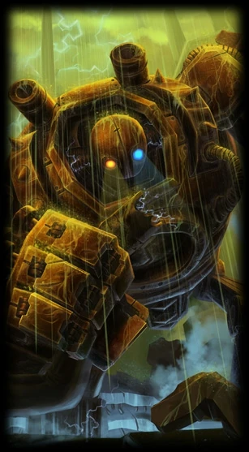
Rusty Blitzcrank
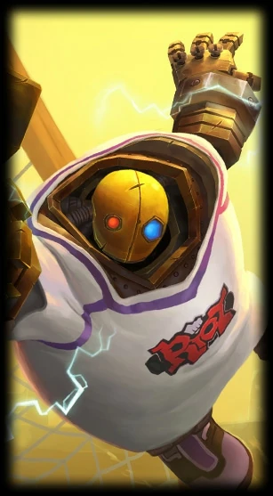
Goalkeeper Blitzcrank
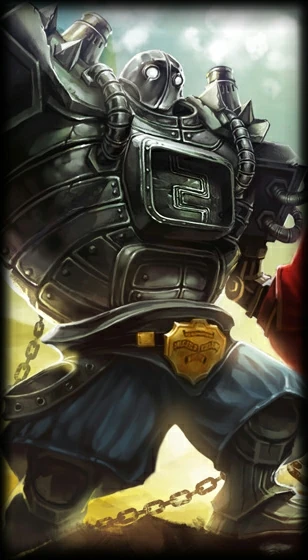
Boom Boom Blitzcrank
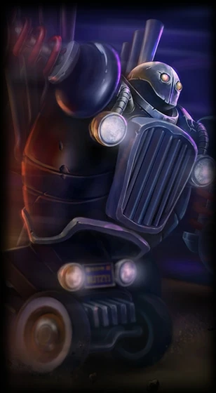
Piltover Customs Blitzcrank
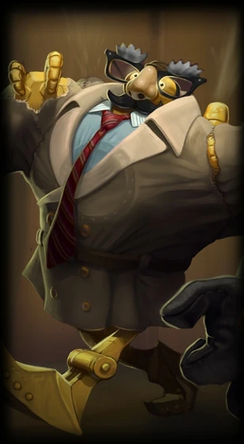
Definitely Not Blitzcrank
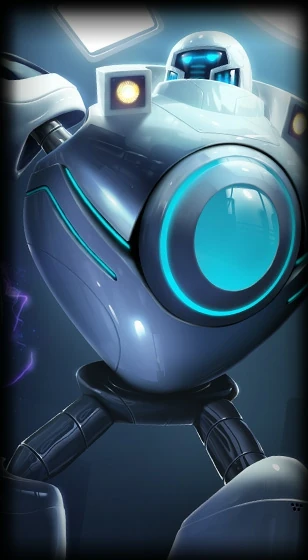
iBlitzcrank
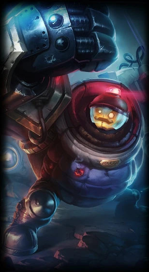
Riot Blitzcrank
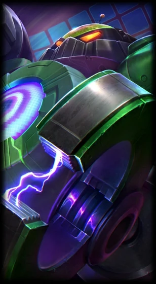
Battle Boss Blitzcrank
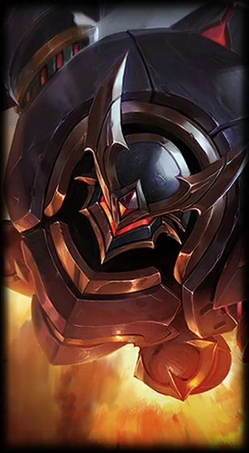
Lancer Rogue Blitzcrank
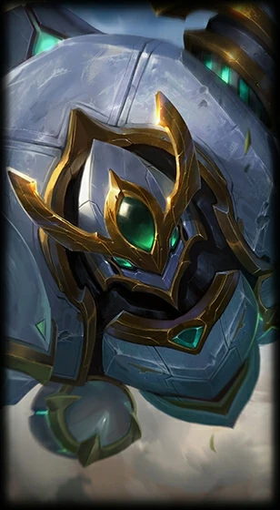
Lancer Paragon Blitzcrank
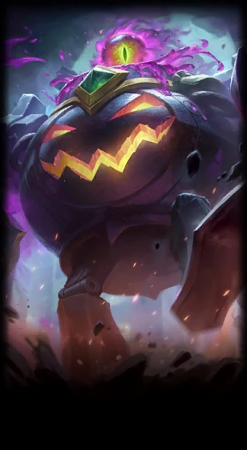
Witch's Brew Blitzcrank
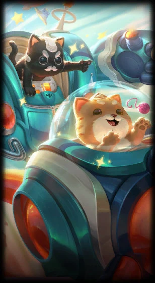
Space Groove Blitz & Crank
Blitzcrank es un campeón de League of Legends, conocido como el Gran Autómata de Vapor. Un autómata gigantesco e indestructible creado originalmente para la eliminación de residuos tóxicos en Zaun, desarrolló una autoconciencia que utiliza para proteger a los habitantes desvalidos del distrito inferior.